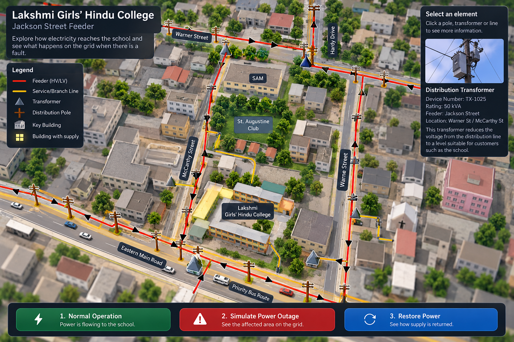

Follow the Power — Lakshmi Girls' Hindu College
Select the school or transformer, then simulate a power interruption.

Welcome to the Digital Grid
Tap the glowing markers on the illustration to explore how a transformer and service connection supply a school. The glowing route is a teaching example, not a verified GIS trace.
Power simulation
Electricity is flowing along the illustrated connection.Illustrative fault: the connection is interrupted and the school scene darkens.
Educational concept only. The background is an AI-generated illustration, not a verified photograph or measured 3D model of Lakshmi Girls’ Hindu College. Asset positions, electrical routes and outage effects are illustrative. Confirm connections and remove sensitive infrastructure details before public use.